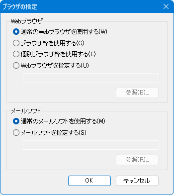

ブラウザ枠は、秀丸エディタの１つの枠（ペイン）の中に、Web ブラウザとほぼ同等のコンテンツを表示する機能です。 Chromium版 Microsoft Edge を使える環境が必要です。
詳細は秀丸エディタ Ver9.22の新機能 ブラウザ枠を参照してください。
ブラウザ枠はタブグループ毎に共通の「ブラウザ枠」とタブに連動して表示される「個別ブラウザ枠」があり、ひとつの秀丸エディタに最大2個のブラウザ枠が表示できます。 (非タブモードの場合も、「共通のブラウザ枠」と「個別ブラウザ枠」2個を表示できます)
秀丸エディタ上でURLリンクとして認識している箇所をクリックした場合、「ブラウザ枠」や「個別ブラウザ枠」で表示できます。
ローカルファイルを表示している場合、「ウォッチ」を有効にすると表示しているファイルを監視して自動的にブラウザ枠を更新します。「個別ブラウザ枠」の場合、編集しているファイルを上書き保存した場合にも更新させることができます。
「表示 → ブラウザ枠」で「ブラウザ枠」を表示させます。「▼」からメニューを表示させ「詳細」を選びます。
「ブラウザ枠」の設定ダイアログが表示されます。設定項目についてはブラウザ枠の詳細を参照。
「個別ブラウザ枠」の設定は「ファイルタイプ別の設定」にあります。「個別ブラウザ枠」の「▼」のメニューにある「個別ブラウザの設定」からも開けます。
メニューの「その他」-「動作環境」で動作環境ダイアログを表示させ、「上級者向け設定」をチェックし「表示/操作」にある「リンク」を選択します。
「ブラウザを指定」ボタンを押すと「ブラウザの指定」ダイアログが開くので、「個別ブラウザ枠」か「ブラウザ枠」を指定します。
